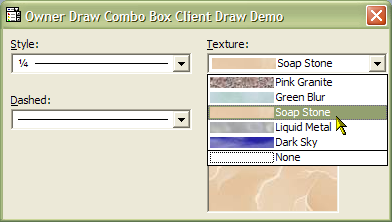

VB5 Custom Owner Draw Combo (43K)
VB5 Custom Owner Draw Combo (43K)
 VB6 Custom Owner Draw Combo (41K)
VB6 Custom Owner Draw Combo (41K)
 19 Dec 2002
19 Dec 2002
VB6 version posted.
 Owner Draw Combo and List Boxes Version 2.1
Owner Draw Combo and List Boxes Version 2.1

Using ecdClientDrawOnly with the Owner Draw Combo List Box Control
Create customised ListBoxes and Combo Boxes, demonstrating how to build line-style and texture-style pickers
This article demonstrates how to use the ecdClientDrawOnly mode of the vbAccelerator Owner Draw and Combo List Box control to draw completely customised Combo Boxes (note that exactly the same technique applies for List Boxes as well). The sample provides three useful implementations - a line picker, a line dash picker and a texture or background picker.
Custom Drawing with vbalODCL.ocx
To draw your own styles with the vbAccelerator Owner Draw Combo and List Box, there are three things you need to do:
- Set the Style property to ecdClientDrawOnly (2).
- Provide the width and height of the item in response to the MeasureItem event.
- Draw the item itself during the DrawItem event.
Responding to the MeasureItem event
The MeasureItem event provides you with three parameters: the Index of the item to measure and two byref long values, WidthPixels and HeightPixels. Set WidthPixels to the desired width of the item in pixels and HeightPixels to the height. If you do not do this, the drop-down part of your combo box will be very small!
Responding to the DrawItem event
The DrawItem event provides the following parameters:
- Index As Long
The ListIndex of the item to draw. - hDC As Long
The hDC to draw the item into. - bSelected As Boolean
Whether the item is selected or not. - bEnabled As Boolean
Whether the item is enabled or not. - LeftPixels As Long
The left-hand corner of the area occupied by the item in pixels. - TopPixels As Long
The top corner of the area occupied by the item in pixels. - RightPixels As Long
The right-hand corner of the area occupied by the item in pixels. - BottomPixels As Long
The bottom corner of the area occupied by the item in pixels. - hFntOld As Long
This is the handle to the font in the control before ODCboLst.OCX selected the appropriate font.
In order to draw an item you need to be able to perform drawing into the Device Context specified by the hDC parameter. You can either do this using the GDI API, or, if you are mad, by drawing into a VB object and then copying the contents into the DC using BitBlt. These methods are covered in turn.
Drawing Using the GDI API - The Samples
There are three sample combo boxes implemented in the sample code:
- A Line-Style Picker
- A Line Dash Style Picker
- A Texture Picker
The implementation of each of these samples is fundamentally the same, just the specifics of the drawing code in each case is different. Therefore we'll just cover the Line-Style picker.
MeasureItem
Items in the Line-Style picker all have the same height and width, and this is set to be the same as the size of the combo box itself. Thus the response to the MeasureItem event is:
Private Sub cboLineStyle_MeasureItem( _
Index As Long, WidthPixels As Long, HeightPixels As Long)
WidthPixels = cboLineStyle.Width \ Screen.TwipsPerPixelX
HeightPixels = cboLineStyle.Height \ Screen.TwipsPerPixelY
End Sub
DrawItem
The line picker itself displays the size of the line and then draws a sample of the line itself. The code uses the ComboBox List property to store the line size to display as text, the ItemData property to store the actual line size (multiplied by 100 since ItemData is a long and the line width itself can have decimal places) and the ItemExtraData to store the style of line to draw. If you wanted to store more sophisticated information against a ComboBox item there are many possible techniques, such as a using an key to an item within Collection (set the collection key to some character followed by the ItemData) or array, or a pointer to an object.
Drawing the item then is a matter of drawing the background, getting the line size text and drawing that, then getting the line size and style and drawing a line sample next to the text. When drawing the background, we need to take account of whether the item is selected or not. Drawing the background is accomplished as follows:
' Ensure text draws with transparent background:
SetBkMode hdc, TRANSPARENT
' Set up a rectangle based on DrawItem parameters:
tR.left = LeftPixels
tR.tOp = TopPixels
tR.Bottom = BottomPixels
tR.Right = RightPixels
' Set the background and text color to draw:
If (bSelected) Then
hBrush = GetSysColorBrush(COLOR_HIGHLIGHT)
SetTextColor hdc, GetSysColor(COLOR_HIGHLIGHTTEXT)
Else
hBrush = GetSysColorBrush(COLOR_WINDOW)
SetTextColor hdc, GetSysColor(COLOR_WINDOWTEXT)
End If
' Draw the background:
FillRect hdc, tR, hBrush
' Clear up - probably not needed for GetSysColorBrush
DeleteObject hBrush
Once the background is displayed, the code checks if the control is in focus and draws the dotted focus rectangle around the item if it is:
If (GetFocus() = cboLineStyle.hwnd) And bSelected Then
DrawFocusRect hdc, tR
End If
Now the actual item can be drawn. We check if any item is actually selected in the control: if not, then there is no more drawing to be done. If the item is selected, the text and line style are read and drawn:
If (Index <> -1) Then
' Get details of item to draw:
iLineWidth = cboLineStyle.ItemExtraData(Index)
iLineStyle = cboLineStyle.ItemData(Index)
sText = cboLineStyle.List(Index)
' Draw the text:
LSet tTXR = tR
tTXR.left = tTXR.left + 4
' Calculate the size needed for the text:
DrawText hdc, sText, -1, tTXR, DT_CALCRECT
' Draw it
DrawText hdc, sText, -1, tTXR, DT_LEFT
' Adjust drawing rectangle to line:
tR.left = 24
tR.Right = tR.Right - 4
' Finally draw the line:
Select Case iLineStyle
Case 1
' single line:
lY = tR.tOp + (tR.Bottom - tR.tOp) \ 2
DrawLine hdc, tR.left, tR.Right, lY, (iLineWidth \ 100)
' ... other line styles here ...
End Select
The DrawLine function is a VB wrapper to creating an appropriate pen and drawing the line:
Private Function DrawLine( _
ByVal hdc As Long, _
ByVal lXStart As Long, ByVal lXEnd As Long, _
ByVal lY As Long, ByVal lWidth As Long, _
Optional ByVal lStyle As Long = PS_SOLID)
Dim hPen As Long
Dim hPenOld As Long
Dim tP As POINTAPI
Dim tLB As LOGBRUSH
' Create the Pen:
tLB.lbColor = GetSysColor(COLOR_WINDOWTEXT)
hPen = ExtCreatePen(PS_GEOMETRIC Or PS_ENDCAP_FLAT Or lStyle, _
lWidth, tLB, 0, ByVal 0&)
' Select the pen for drawing:
hPenOld = SelectObject(hdc, hPen)
' Draw the line using the pen:
BeginPath hdc
MoveToEx hdc, lXStart, lY, tP
LineTo hdc, lXEnd, lY
EndPath hdc
StrokePath hdc
' Remove the pen and clear up:
SelectObject hdc, hPenOld
DeleteObject hPen
End Function
Alternative (More VB-like) Method
An alternative to using the GDI API to draw the items is to use an intermediate PictureBox to draw onto using VB commands, and then transfer the result using the GDI BitBlt method. To do this, add a PictureBox to your form. Set the Visible property to False and then set AutoRedraw to True.
When the DrawItem event fires, ensure that the PictureBox is large enough to draw the item into, using for example:
If (picDraw.Width < (RightPixels - LeftPixels) \ Screen.TwipsPerPixelX Then picDraw.Width = (RightPixels - LeftPixels) \ Screen.TwipsPerPixelX End If If (picDraw.Height < (BottomPixels - TopPixels) \ Screen.TwipsPerPixelY Then picDraw.Height = (BottomPixels - BottomPixels) \ Screen.TwipsPerPixelY End If
Now you can draw onto the PictureBox using any of the standard (awful) VB drawing methods such as CurrentX, CurrentY, Line, Print, PaintPicture etc. Once complete, you can transfer the results to the hDC passed in by DrawItem like this:
Private Declare Function BitBlt Lib "gdi32" _
(ByVal hDestDC As Long, _
ByVal X As Long, ByVal Y As Long, _
ByVal nWidth As Long, ByVal nHeight As Long, _
ByVal hSrcDC As Long, _
ByVal xSrc As Long, ByVal ySrc As Long, _
ByVal dwRop As Long) As Long
...
BitBlt hdc, LeftPixels, TopPixels, _
(RightPixels - LeftPixels - 1), (BottomPixels - TopPixels - 1), _
picDraw.hDC, _
0, 0, _
vbSrcCopy